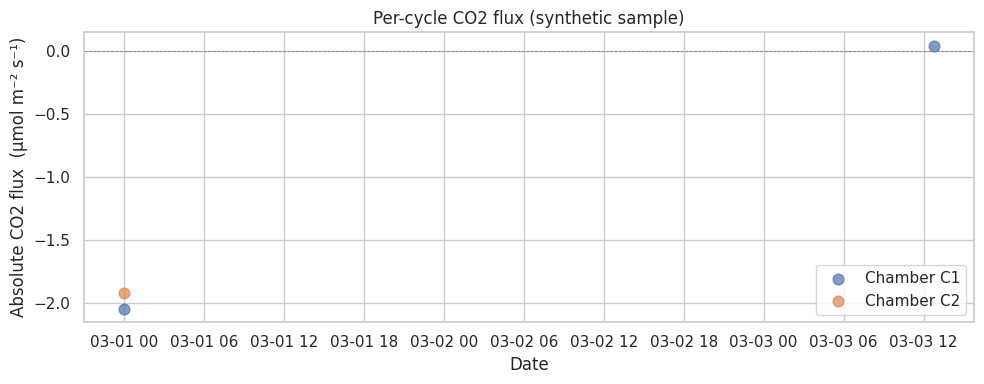

030 — Flux cycle calculation#
This tutorial computes CO2 + H2O fluxes from quality-controlled chamber
concentration cycles. It runs end-to-end on the bundled synthetic
sample (no setup required) — set PALMWTC_DATA_DIR to point at your
own QC parquet to use real data instead.
What you’ll see:
Resolve I/O paths (config layered: kwargs → env → yaml → bundled).
Run the
"flux"pipeline step (under the hood: cycle identification, linear-fit slope per cycle, scoring, optional ML outlier flagging).Plot the resulting per-cycle flux time series and a diurnal heatmap.
Inspect the cycles dataframe for downstream calibration.
import pandas as pd
import matplotlib.pyplot as plt
from palmwtc.config import DataPaths
from palmwtc.pipeline import run_step
from palmwtc.viz import set_style
set_style()
pd.set_option("display.width", 120)
pd.set_option("display.max_columns", 20)
1. Resolve I/O paths#
DataPaths.resolve() walks: explicit kwargs → PALMWTC_DATA_DIR env →
palmwtc.yaml → bundled synthetic sample. The last layer always succeeds,
so this notebook runs even on a fresh pip install palmwtc with no setup.
paths = DataPaths.resolve()
print(paths.describe())
DataPaths (source=sample (bundled synthetic), site=libz):
raw_dir = /home/runner/work/palmwtc/palmwtc/src/palmwtc/data/sample/synthetic
processed_dir = /home/runner/work/palmwtc/palmwtc/src/palmwtc/data/sample/Data/Integrated_QC_Data
exports_dir = /home/runner/work/palmwtc/palmwtc/src/palmwtc/data/sample/exports
config_dir = /home/runner/work/palmwtc/palmwtc/src/palmwtc/data/sample/config
extras = <none>
2. Run the flux step#
run_step("flux") does the work: load QC parquet → discover chambers from
CO2_C<n> columns → for each chamber, prepare data + identify cycles +
fit slopes + score quality → write 01_chamber_cycles.csv.
This is one library call, fully testable, no notebook-cell-resident logic.
result = run_step("flux", paths)
print(f"Step status: {'OK' if result.ok else 'FAILED'}")
print(f"Elapsed: {result.elapsed_seconds:.1f}s")
print(f"Rows in: {result.rows_in:,}")
print(f"Rows out: {result.rows_out}")
print(f"Artefact: {result.artefacts[0]}")
print(f"Chambers: {result.metrics.get('chambers')}")
Step status: OK
Elapsed: 16.6s
Rows in: 20,160
Rows out: 3
Artefact: /home/runner/work/palmwtc/palmwtc/src/palmwtc/data/sample/exports/digital_twin/01_chamber_cycles.csv
Chambers: ['C1', 'C2']
3. Inspect the cycle output#
cycles = pd.read_csv(result.artefacts[0])
print(f"{len(cycles)} cycles across {cycles['chamber'].nunique()} chamber(s)")
cycles[["chamber", "cycle_id", "flux_date", "flux_slope", "r2", "qc_flag", "flux_absolute"]].head()
3 cycles across 2 chamber(s)
| chamber | cycle_id | flux_date | flux_slope | r2 | qc_flag | flux_absolute | |
|---|---|---|---|---|---|---|---|
| 0 | C1 | 1 | 2026-03-01 00:00:00 | -0.008361 | 0.510316 | 0 | -2.048241 |
| 1 | C1 | 2 | 2026-03-03 12:45:00 | 0.000181 | 0.167873 | 1 | 0.044259 |
| 2 | C2 | 1 | 2026-03-01 00:00:00 | -0.007869 | 0.552352 | 1 | -1.923407 |
4. Plot the per-cycle flux series#
The synthetic sample only produces a handful of cycles (it’s 1 week of
toy data). Real LIBZ data yields thousands — try setting
PALMWTC_DATA_DIR to a real chamber dataset.
fig, ax = plt.subplots(figsize=(10, 4))
for chamber, group in cycles.groupby("chamber"):
ax.scatter(
pd.to_datetime(group["flux_date"]),
group["flux_absolute"],
label=f"Chamber {chamber}",
s=60,
alpha=0.7,
)
ax.axhline(0, color="grey", linewidth=0.6, linestyle="--")
ax.set_xlabel("Date")
ax.set_ylabel("Absolute CO2 flux (μmol m⁻² s⁻¹)")
ax.set_title("Per-cycle CO2 flux (synthetic sample)")
ax.legend()
plt.tight_layout()
plt.show()

5. Cycle-quality summary#
qc_flag is the per-cycle pass/fail flag (0 = pass, 1 = warn, 2 = fail).
r2 is the linear-fit goodness on the closed-phase concentration ramp;
high R² + low NRMSE + appropriate SNR → cycle accepted into calibration windows.
cycles[["chamber", "qc_flag", "r2", "nrmse", "snr"]].groupby("chamber").describe()
| qc_flag | r2 | ... | nrmse | snr | |||||||||||||||||
|---|---|---|---|---|---|---|---|---|---|---|---|---|---|---|---|---|---|---|---|---|---|
| count | mean | std | min | 25% | 50% | 75% | max | count | mean | ... | 75% | max | count | mean | std | min | 25% | 50% | 75% | max | |
| chamber | |||||||||||||||||||||
| C1 | 2.0 | 0.5 | 0.707107 | 0.0 | 0.25 | 0.5 | 0.75 | 1.0 | 2.0 | 0.339095 | ... | 0.210656 | 0.221757 | 2.0 | 2.266499 | 1.237885 | 1.391182 | 1.828841 | 2.266499 | 2.704158 | 3.141816 |
| C2 | 1.0 | 1.0 | NaN | 1.0 | 1.00 | 1.0 | 1.00 | 1.0 | 1.0 | 0.552352 | ... | 0.201954 | 0.201954 | 1.0 | 3.539510 | NaN | 3.539510 | 3.539510 | 3.539510 | 3.539510 | 3.539510 |
2 rows × 32 columns
Next#
031 / 032 — promote high-confidence cycles into calibration windows (
run_step("windows", paths)).033 — validate against literature ecophysiology bounds (
run_step("validation", paths)).CLI shortcut —
palmwtc runruns all four steps end-to-end.